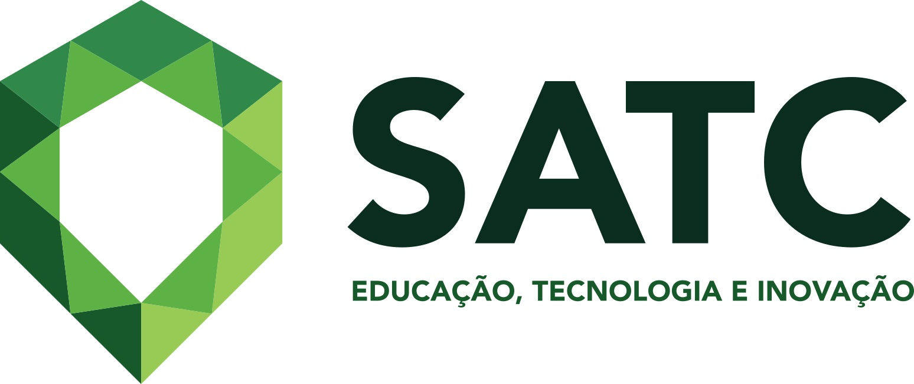

Curso Técnico de Informática SATC
| "Lógico, tecnológico, inovador e criativo é o que um ingressante em informática precisa ser para entrar no mundo da programação, hardwares e softwares. Cada vez mais a área da tecnologia vai se expandindo, abrangendo todo o tipo de campo, por isso o mercado de trabalho é vasto." |
Definição
A área de Tecnologia da Informação de uma empresa é essencial para o seu bom funcionamento,
sendo assim, o curso técnico em Informática tem como objetivo a formação de profissionais
que possam desenvolver programas, solucionar problemas computacionais, realizar testes de
software e executar a manutenção de programas em computadores.
Para isso, são disponibilizados laboratórios de informática com os programas necessários
para execução de projetos, além de possuir um laboratório de conversação (ILab) e um
laboratório de redes.
As aulas são totalmente práticas, preparando o aluno para atuar em empresas de programação,
desenvolvimento de sistemas, redes de computação, tecnologia da informação e também trabalhar autônomo.
Formação
O profissional técnico formado em Informática poderá atuar nas empresas de programação, desenvolvimento de
sistemas e manutenção de programas de computadores implantados, empresas de redes de computadores, empresas
de tecnologia da informação, empresas de programação web e também como freelancer.
Matriz Curricular
|
MÓDULO 1
|
MÓDULO 2
|
|
MÓDULO 3
|
MÓDULO 4
|
Carga horária total do Estágio Profissional Supervisionado ou TCC (Trabalho de Conclusão de Curso): 300h
Carga horária total do Curso: 1500h
CONTATO